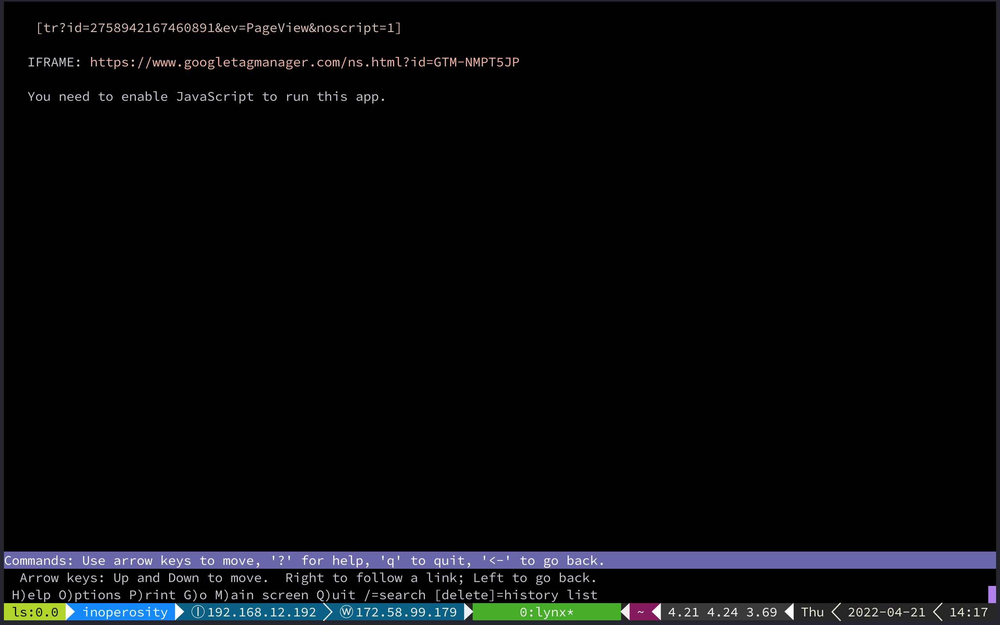

unfree, inaccessible, undescribed javascript traps will not liberate the working class
making this quick, let's perform a critique.
often it is asserted, "let's do something!" in response to extractive or capitalistic capture empowered by technology[0][1].
All the AirBnBs in New Orleans, a city with a housing shortage.
— Angela is tired. (@byzplease) April 20, 2022
Huh, wonder where all the housing went? pic.twitter.com/AEib4nFkip
Someone make this for us! No it won’t solve it but at least we can hone our rage. https://t.co/Pw6EaO9F3t
— SB ⚜️🧀 (@Malikia_B) April 21, 2022
problem
here's a problem: https://whoownswhat.justfix.nyc/en/
they make apps like this, and they _appear_ to be "liberating" data
and what's it? a massive react app

so we've seen it all before: ostensibly we appear to be liberating the working class and the colonized when you know it's probably best just to start with a motherfuckingwebsite dot com and maybe add some (hypermediated) navigation between a WebPageElement and properly apply microdata[2]
but there again spinoza's question crops up: why does the human fight for their servitude as if it were their freedom?
an inaccessible javascript trap that is visually appealing that gives everyone a sense of apparent empowerment
and surprise surprise: no microdata vocabulary applied at all. it's a black hole
so, an inaccessible, undescribed javascript trap that only gives the stark appearance of being a website, which doesn't even work without javascript
we're shooting the working class in the foot
- scholium
-
in my view, that's a honeypot for a buyout and to repurpose human traffic: perfect for someone who wants to shoot instances of it down as quickly as they're deployed. post hoc, ergo propter hoc. rinse, repeat
now they get free leads on digital easements and personally identifiable information. because you know that app-like isn't following GDPR
and none of these apps will be "webbed" without linked data (use of microdata vocabularies like schema.org), so now people won't be able to take advantage of search engines to see how matters are going with others who are running similar instances across territories of the planet.
let's also mention that the validators, auditing tools, etc. aren't made available through the site; but a "donate" button is
- scholium
-
a friend pointed out that it's somewhat unsurprising that such app-likes only allow for payment to one person
i agree. i don't particularly find anything nefarious going on here. audrey lorde's point primarily is that epistemic betrayers are our problem, not the hammers and sickles we pick up. so the main problem here is how a potential liberatory tool can be built like a gilded guillotine only to, as the story is as old as time itself, be "bought out" once the movement toward its production is re-organized into production forces: capital's primary desire is slavery, not exploitation. those running this app-like will not be benefitting from the protective nature of a vocabulary and will hardly benefit from search engines. they're not even using the very vocabulary of that search engine which uses javascript to crawl its pages. so conceptual hygiene aside, the app is fundamentally a silo, a black hole, as it were.
it's very shiny and looks great on the surface, but under the hood, all it can be is decomposed for whatever kernel of insight is leftover after its fall. it's prime pickings for airbnb to buy it out, because it has no conceptual nor architectural integrity. more than this, the critique should serve as an explanation as to why hardly anyone will pick it up to engage in parallel play (taking the risk to host other apps like it). in a way, accessible, free, described web apps (with hypermediated apis) invite people not only to engage in liberating trust in the data, but they enable counter-storytelling as the very lifeforce of the webapp's raison d'étre